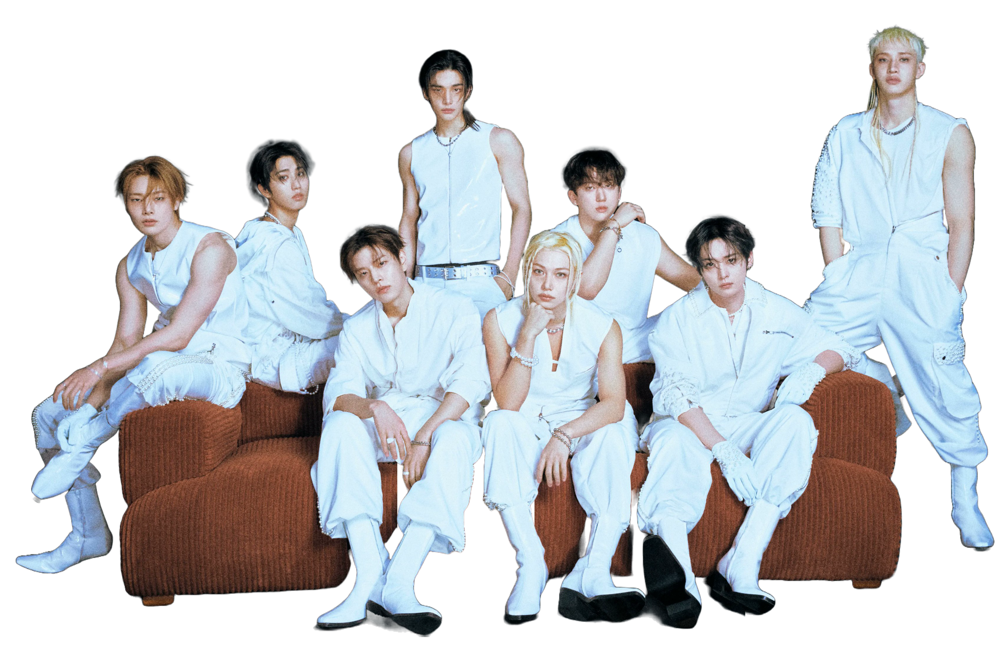
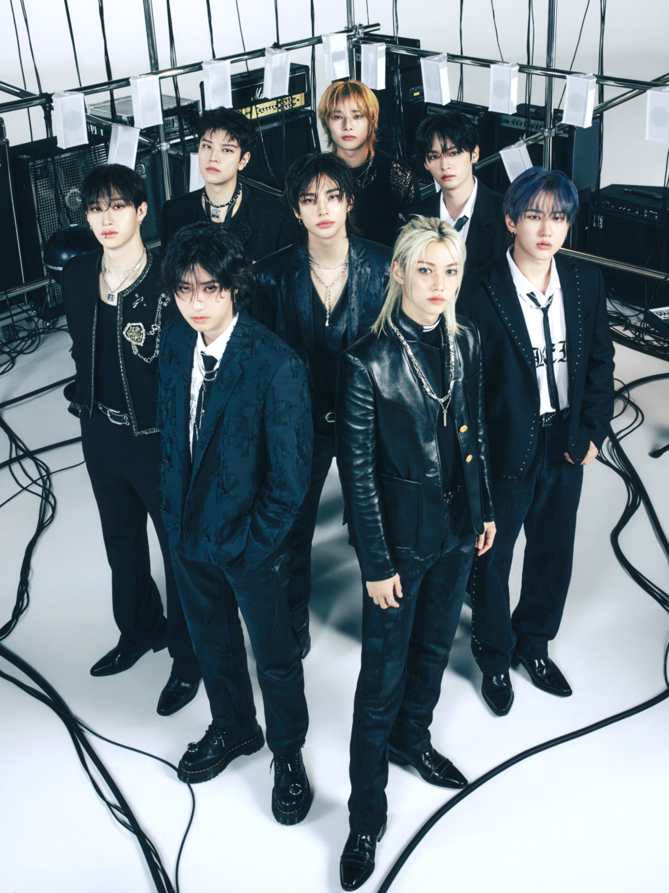
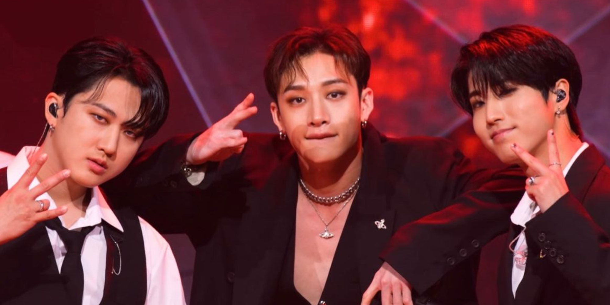
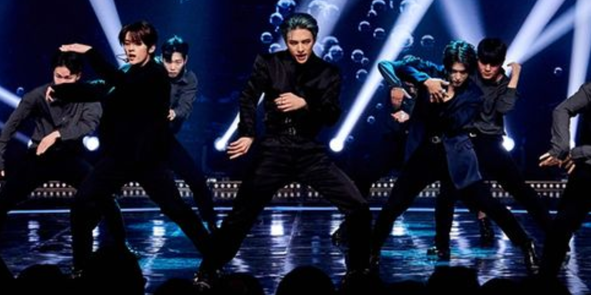
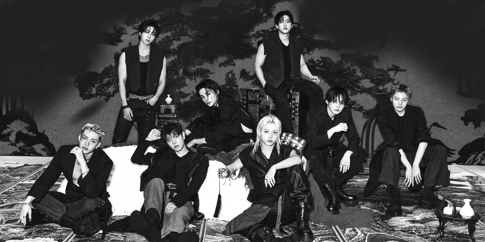

Step Out! Este é o Stray Kids!
Bem-vindo(a), BABY-STAY!

Antes de tudo: dê o play e entenda em 3 minutos por que o Stray Kids é um caminho sem volta:
O Stray Kids (스트레이 키즈) é um grupo sul-coreano de 8 integrantes: Bang Chan, Lee Know, Changbin, Hyunjin, Han, Felix, Seungmin e I.N. Ao contrário do modelo padrão das agências, o grupo foi montado a dedo pelo próprio líder, Bang Chan, a partir da sub-unit autoral de produtores 3RACHA (com Changbin e Han).
Em 2017, eles enfrentaram a própria JYP Entertainment no reality show homônimo de sobrevivência com uma missão inédita: estrear juntos como uma equipe unida e autossuficiente. Produzindo as próprias faixas e coreografias, superaram eliminações dramáticas e estrearam oficialmente em 2018.
Com uma sonoridade autoral batizada de "Mala Taste" — misturando batidas pesadas, hip-hop e melodias intensas —, o grupo quebrou recordes mundiais e domina os maiores estádios do planeta ao lado do fandom STAY, sob o lema: "Stray Kids everywhere all around the world".

O grupo é dividido em três sub-grupos, cada um com suas especialidades:

Produção & RAP
Composta por Bang Chan, Changbin e Han. Eles são os cérebros por trás da grande maioria das músicas, compondo batidas e letras autorais.

Performance & Dança
Composta por Lee Know, Hyunjin e Felix. Responsáveis pela presença de palco avassaladora, coreografias marcantes e expressões artísticas.
Vocais
Composta por Seungmin e I.N. Entregam as harmonias suaves, vocais e melodias marcantes que equilibram o som pesado do grupo.
Alguns recordes que mostram o impacto global do Stray Kids:
Vote no seu integrante favorito do Stray Kids:
